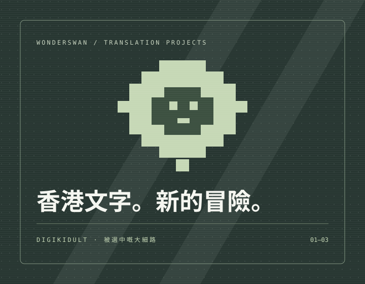

HONG KONG FAN TRANSLATION ARCHIVE
重遊WS數碼世界
不一樣香港演譯
用我哋熟悉嘅文字，再次出發。
WonderSwan 數碼暴龍・香港繁體中文翻譯

WONDERSWAN / COMPLETE GAME LIST
重遊數碼世界
香港演譯・全系列計劃一覽
狀態由 DigiKidult 提供
| Game | 別名 | Status | 優化版本 |
|---|---|---|---|
| Ver.WS | 完成 | Yes | |
| 陽極馴獸師 | 開發中 | Yes | |
| 陰極馴獸師 | 開發中 | Yes | |
| Digital Partner | 未有計劃 | — | |
| 雙人馴獸師 | 開發中 | — | |
| D-1馴獸師 | 未開始 | — | |
| Medley | 未開始 | — | |
| 陽陰極馴獸師英文版 | 未開始 | TBC | |
| 格鬥之王 | 未開始 | — | |
| 聖龍之旅 | 未開始 | Yes | |
| 卡遊Ver. WS | 未有計劃 | — | |
| 格鬥之王1.5 | 完成 | — | |
| D計劃 | 未開始 | — | |
| 格鬥之王2.0 | 開發中 | — |
「完成」為項目開發狀態，不代表已有公開下載。「優化版本」沿用項目資料：Yes＝有；TBC＝待確認；—＝未提供資料。優化版本與中文翻譯的發佈狀態分開處理。
V龍獸版為香港英文版本；「格鬥之王2.0」為本頁別名。每個作品均可由遊戲名稱開啟獨立詳情頁；未提供的介紹及版本資料標示為待補充。
01 / PROJECT LIBRARY
作品專頁詳細進度
每個故事，都值得用香港文字重溫。
Translation progress ≠ public release.
暫時未有已核實發佈嘅中文補丁。
No verified Cantonese translation releases yet.
陽極 Ver. TBB v1a、陰極 Ver. TBB v1c 翻譯內容已定稿，仍待 UAT（用戶驗收測試）。目前未提供已核實中文補丁下載。
02 / BEFORE YOU PLAY
準備好，再出發。
將來有已核實發佈版本時，項目頁先會提供 IPS 補丁連結。本站不提供遊戲 ROM。
- 01
確認版本 / Check the release
先閱讀項目狀態、發佈說明及相容版本。測試版本不代表正式發佈。
- 02
準備原版 / Prepare your game
自行準備合法取得、與補丁要求相符的原版遊戲備份，並保留原始檔案。
- 03
套用補丁 / Apply the IPS
按該版本說明核對校驗碼，再用支援 IPS 的工具套用補丁。先備份存檔，再開始遊玩。
03 / KEEP THE ADVENTURE ALIVE
被選中嘅大細路。
為熟悉嘅數碼世界，加返一份香港味。DigiKidult WonderSwan 翻譯計劃，以香港繁體中文呈現遊戲文字，保留粵語語感。
陰極／陽極訓練師攻略 ↗計劃進度由項目擁有人提供；公開下載須另行核實。社交連結沿用現有 DigiKidult 攻略網站所列地址；個別平台內容未逐一核實。
資料整理 / 27 OCT 2026